Quick Start
# Create example networks
set.seed(42)
# From adjacency matrix
adj_matrix <- matrix(
c(0, 0.8, 0.5, 0.2, 0,
0.8, 0, 0.6, 0, 0.3,
0.5, 0.6, 0, 0.7, 0.4,
0.2, 0, 0.7, 0, 0.9,
0, 0.3, 0.4, 0.9, 0),
nrow = 5, byrow = TRUE,
dimnames = list(LETTERS[1:5], LETTERS[1:5])
)
# Plot from adjacency matrix
splot(adj_matrix, title = "From Matrix")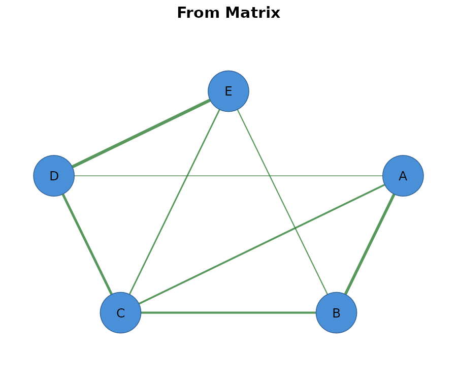
# With customization
splot(adj_matrix,
layout = "spring",
node_fill = "steelblue",
edge_color = "gray50",
title = "Customized Network")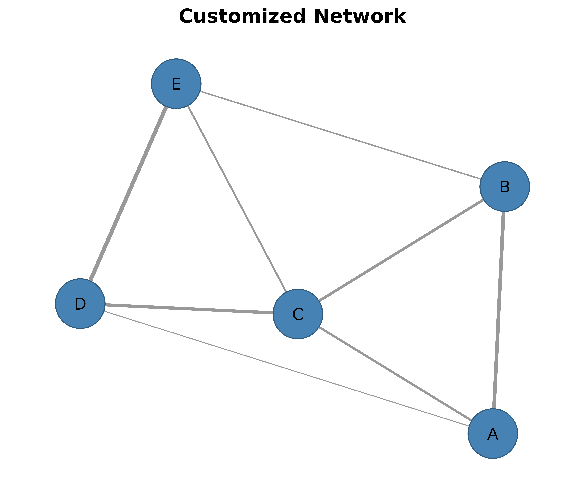
g <- igraph::graph_from_adjacency_matrix(adj_matrix, mode = "undirected", weighted = TRUE)
splot(g, title = "From igraph")
# From TNA model (requires tna package)
library(tna)
# Build TNA model
tna_model <- tna(group_regulation)
# Plot directly from TNA model
splot(tna_model, title = "From TNA Model")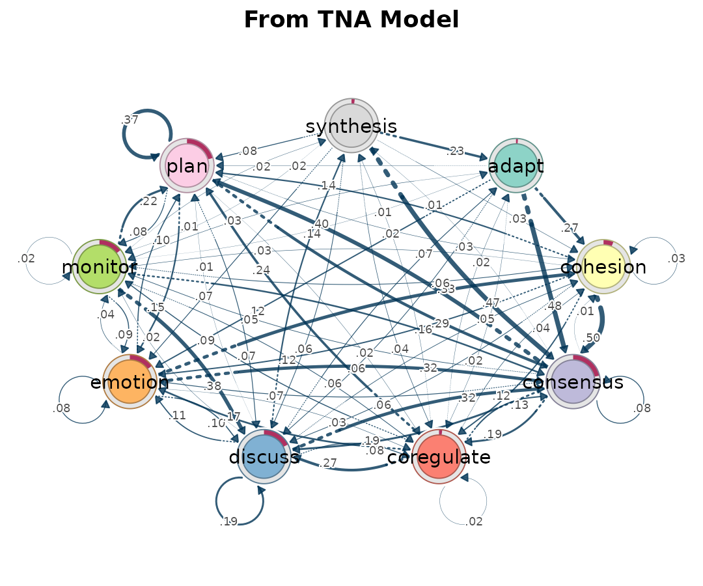
Plotting Functions
Network Plots
The core plotting functions for network visualization.
| Function | Description |
|---|---|
splot() |
Main plotting function using base R graphics |
soplot() |
Grid/ggplot2-style network plotting |
# Create a sample network
net <- as_cograph(adj_matrix)
# Basic splot
splot(net, title = "Basic splot()")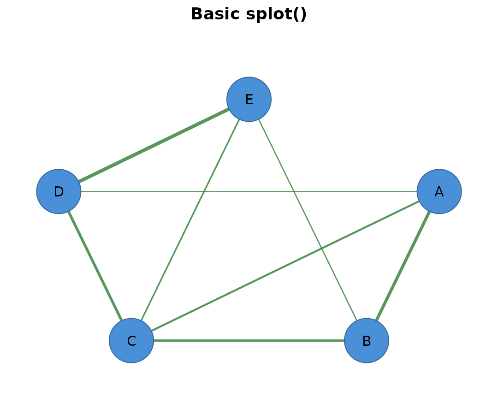
# With layout and styling
splot(net, layout = "circle", node_fill = "coral", title = "Circle Layout")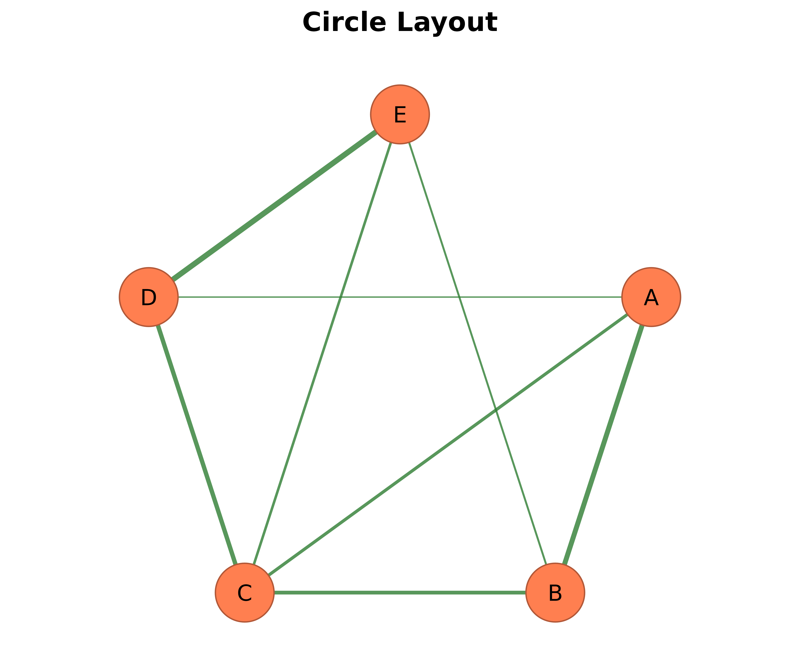
Specialized Network Plots
For multi-group, bipartite, and multilevel network structures.
| Function | Description |
|---|---|
plot_htna() |
Heterogeneous/bipartite networks (two distinct groups) |
plot_mtna() |
Multi-cluster networks (3+ groups) |
plot_mlna() |
Multilevel 3D perspective view |
plot_mcml() |
Multi-cluster multilevel (combines mtna + mlna) |
# Create a larger network for demonstration
set.seed(123)
large_adj <- matrix(runif(100), 10, 10)
diag(large_adj) <- 0
large_adj <- (large_adj + t(large_adj)) / 2
rownames(large_adj) <- colnames(large_adj) <- paste0("N", 1:10)
# Heterogeneous network (two groups)
plot_htna(large_adj, groups = list(
GroupA = paste0("N", 1:5),
GroupB = paste0("N", 6:10)
))
# Multi-cluster network
plot_mtna(large_adj, clusters = list(
Cluster1 = paste0("N", 1:3),
Cluster2 = paste0("N", 4:6),
Cluster3 = paste0("N", 7:10)
))Comparison & Heatmaps
Visualize network differences and weight matrices.
| Function | Description |
|---|---|
plot_compare() |
Difference network (x - y) with pos/neg coloring |
plot_heatmap() |
Weight matrix heatmap |
# Create two networks for comparison
set.seed(42)
net1 <- matrix(runif(25), 5, 5)
diag(net1) <- 0
net1 <- (net1 + t(net1)) / 2
rownames(net1) <- colnames(net1) <- LETTERS[1:5]
net2 <- matrix(runif(25), 5, 5)
diag(net2) <- 0
net2 <- (net2 + t(net2)) / 2
rownames(net2) <- colnames(net2) <- LETTERS[1:5]
# Network comparison (use cograph:: to avoid tna namespace conflict)
# Green edges: net1 > net2 (positive difference)
# Red edges: net1 < net2 (negative difference)
cograph::plot_compare(net1, net2, title = "Network Comparison (net1 - net2)")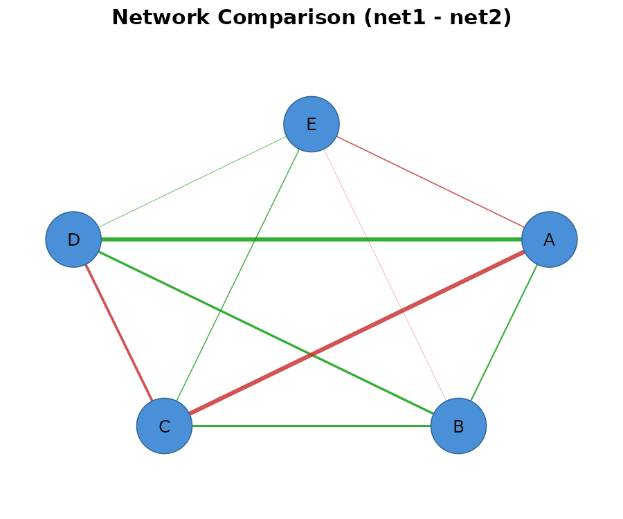
# Basic heatmap
plot_heatmap(net1, title = "Network Heatmap")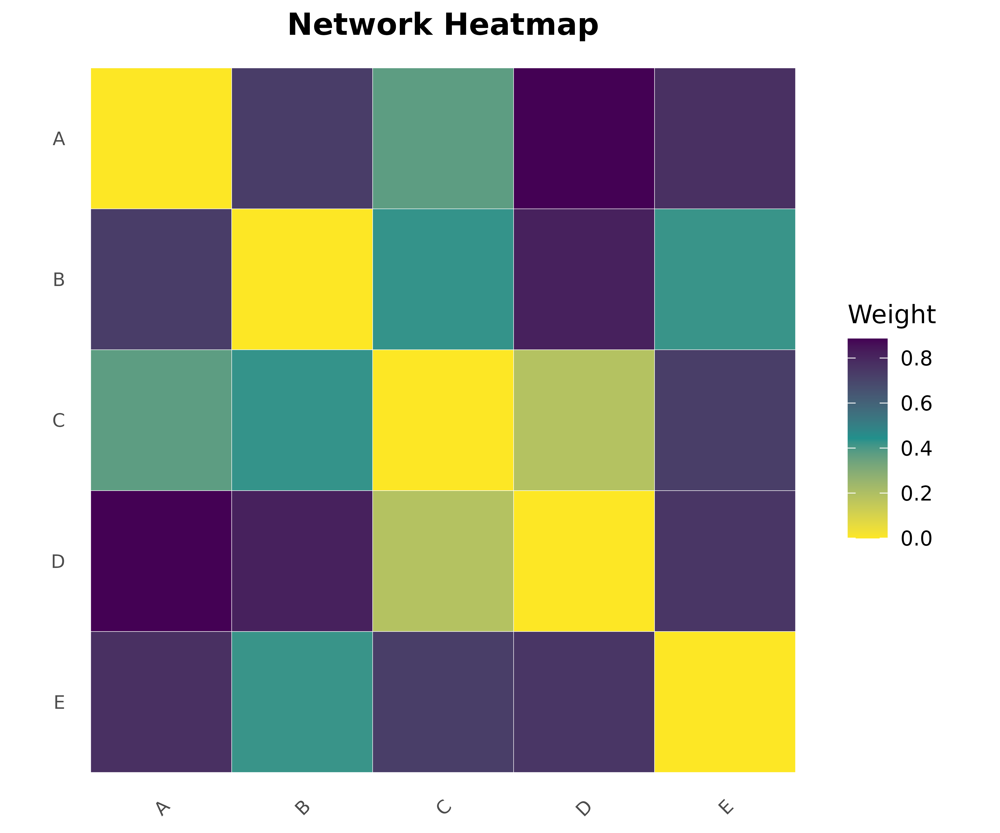
Network Creation & Conversion
Import
| Function | Description |
|---|---|
as_cograph() / to_cograph()
|
Convert any format to cograph_network |
cograph() |
Create a cograph_network object |
Supported input formats: - Adjacency matrices - Edge lists (data.frame with from/to columns) - igraph objects - TNA models (tna, group_tna)
# From matrix
mat <- matrix(c(0, 1, 0, 1, 0, 1, 0, 1, 0), 3, 3,
dimnames = list(c("X", "Y", "Z"), c("X", "Y", "Z")))
net_from_mat <- as_cograph(mat)
print(net_from_mat)
#> Cograph network: 3 nodes, 2 edges ( undirected )
#> Source: matrix
#> Nodes (3): X, Y, Z
#> Edges: 2 / 3 (density: 66.7%)
#> Weights: [1.000, 1.000] | mean: 1.000
#> Strongest edges:
#> X -- Y 1.000
#> Y -- Z 1.000
#> Layout: none
# From edge list
edges <- data.frame(
from = c("A", "A", "B", "C"),
to = c("B", "C", "C", "D"),
weight = c(0.5, 0.8, 0.3, 0.9)
)
net_from_edges <- as_cograph(edges)
splot(net_from_edges, title = "From Edge List")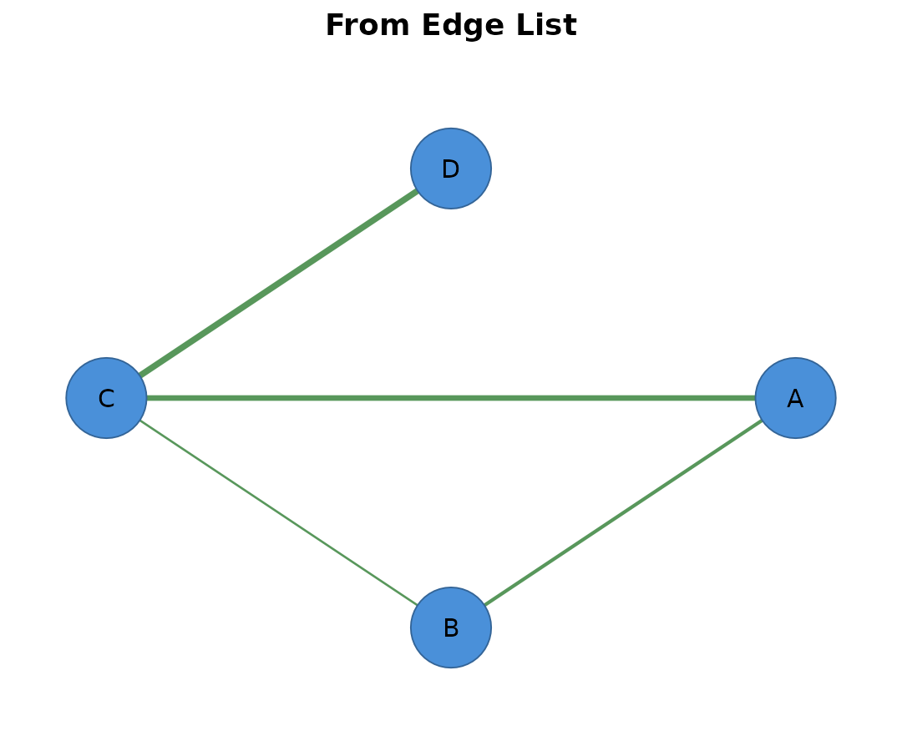
# From igraph
g <- igraph::make_ring(5)
igraph::V(g)$name <- LETTERS[1:5]
net_from_igraph <- as_cograph(g)
splot(net_from_igraph, title = "From igraph Ring")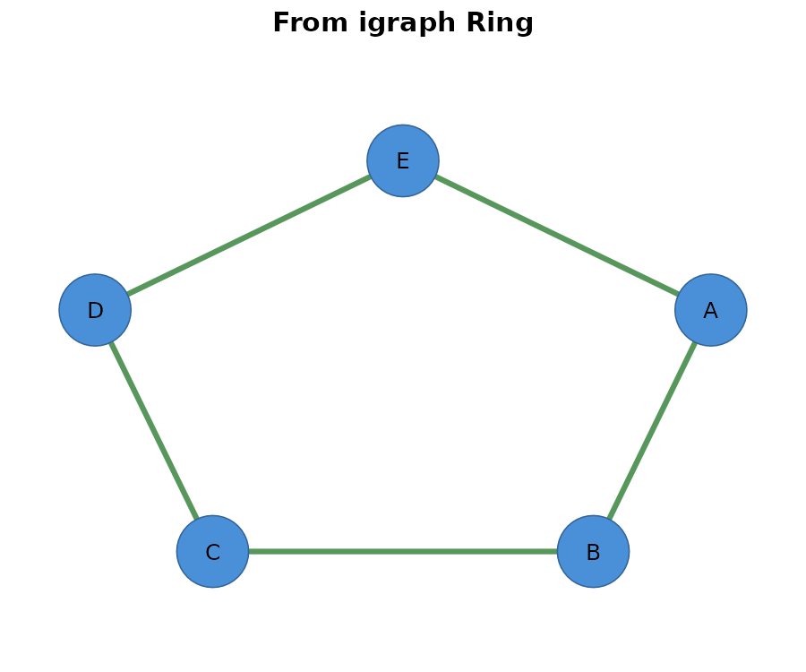
Export
| Function | Output | Description |
|---|---|---|
to_igraph() |
igraph |
Export to igraph object |
to_data_frame() / to_df()
|
data.frame |
Export to edge list |
to_matrix() |
matrix |
Export to adjacency matrix |
# Create a network
net <- as_cograph(adj_matrix)
# Convert to igraph for analysis
if (requireNamespace("igraph", quietly = TRUE)) {
g <- to_igraph(net)
cat("Betweenness centrality:\n")
print(round(igraph::betweenness(g), 2))
}
#> Betweenness centrality:
#> A B C D E
#> 1.5 0.0 1.0 0.0 0.0
# Export to edge list
df <- to_df(net)
head(df)
#> from to weight
#> 1 A B 0.8
#> 2 A C 0.5
#> 3 B C 0.6
#> 4 A D 0.2
#> 5 C D 0.7
#> 6 B E 0.3
# Export to matrix
adj <- to_matrix(net)
print(adj)
#> A B C D E
#> A 0.0 0.8 0.5 0.2 0.0
#> B 0.8 0.0 0.6 0.0 0.3
#> C 0.5 0.6 0.0 0.7 0.4
#> D 0.2 0.0 0.7 0.0 0.9
#> E 0.0 0.3 0.4 0.9 0.0Network Utilities
Community Detection
| Function | Description |
|---|---|
communities() |
Detect communities using various algorithms |
community_louvain() |
Louvain algorithm |
community_walktrap() |
Walktrap algorithm |
compare_communities() |
Compare two community structures |
# Use Zachary's karate club example from igraph
g <- igraph::make_graph("Zachary")
# Detect communities with different methods
comm_louvain <- community_louvain(g)
comm_walktrap <- community_walktrap(g)
cat("Louvain communities:", length(unique(igraph::membership(comm_louvain))), "\n")
#> Louvain communities: 4
cat("Walktrap communities:", length(unique(igraph::membership(comm_walktrap))), "\n")
#> Walktrap communities: 5
# Compare community structures
nmi <- compare_communities(comm_louvain, comm_walktrap, "nmi")
cat("NMI between methods:", round(nmi, 3), "\n")
#> NMI between methods: 0.762
# Plot with community coloring
mat <- igraph::as_adjacency_matrix(g, sparse = FALSE)
splot(mat,
node_fill = igraph::membership(comm_louvain),
title = "Zachary Karate Club - Louvain Communities")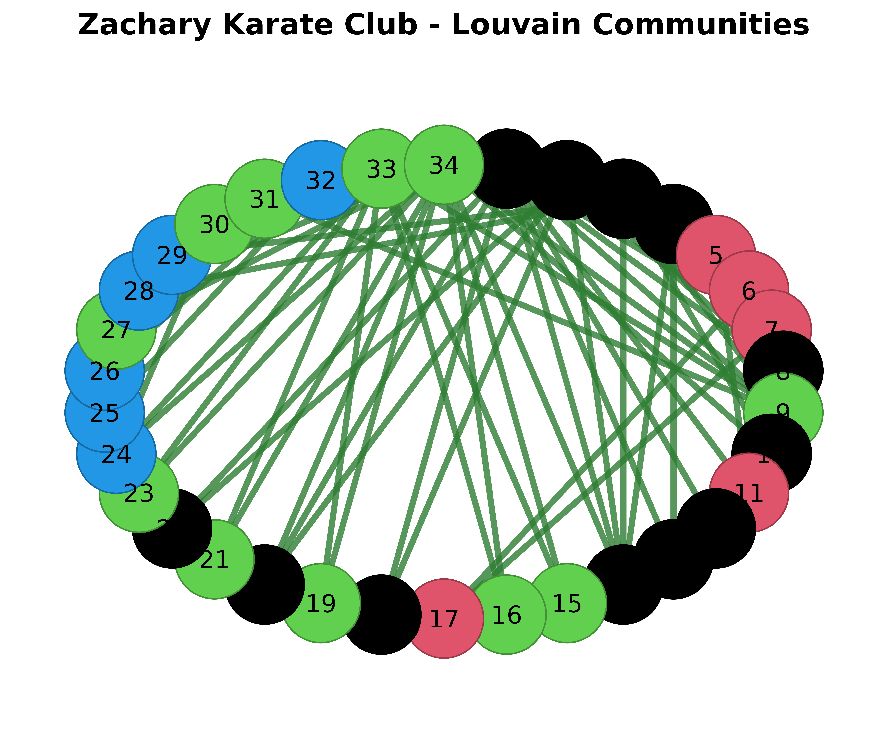
Edge Filtering
| Function | Description |
|---|---|
filter_edges() |
Filter edges by weight expression |
# Create weighted network
set.seed(42)
weighted_mat <- matrix(runif(36), 6, 6)
diag(weighted_mat) <- 0
weighted_mat <- (weighted_mat + t(weighted_mat)) / 2
rownames(weighted_mat) <- colnames(weighted_mat) <- LETTERS[1:6]
weighted_net <- as_cograph(weighted_mat)
# Keep only strong edges (weight > 0.5)
strong_net <- filter_edges(weighted_net, weight > 0.5)
# Compare
par(mfrow = c(1, 2))
splot(weighted_net, title = "Original Network")
splot(strong_net, title = "Strong Edges Only (> 0.5)")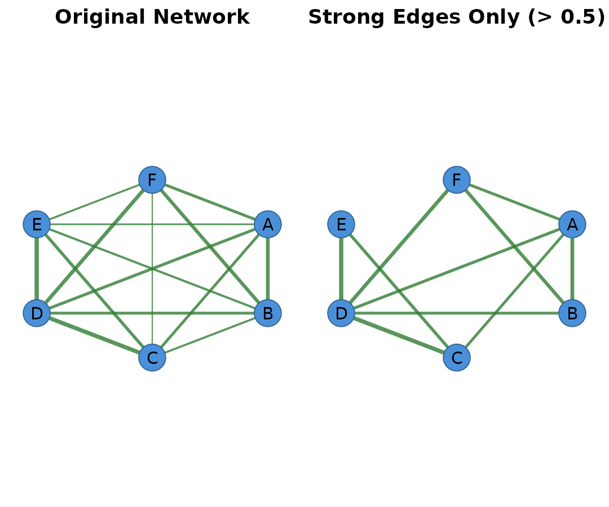
Piping Workflow
Transform networks using pipe-friendly functions.
| Function | Description |
|---|---|
cograph() |
Create network object |
sn_layout() |
Apply layout algorithm |
sn_theme() |
Apply visual theme |
sn_nodes() |
Set node aesthetics |
sn_edges() |
Set edge aesthetics |
sn_render() |
Render to plot |
# Pipe-based workflow
cograph(adj_matrix) |>
sn_layout("spring", seed = 42) |>
sn_nodes(fill = "steelblue", size = 0.1) |>
sn_edges(color = "gray40") |>
sn_render(title = "Piped Network")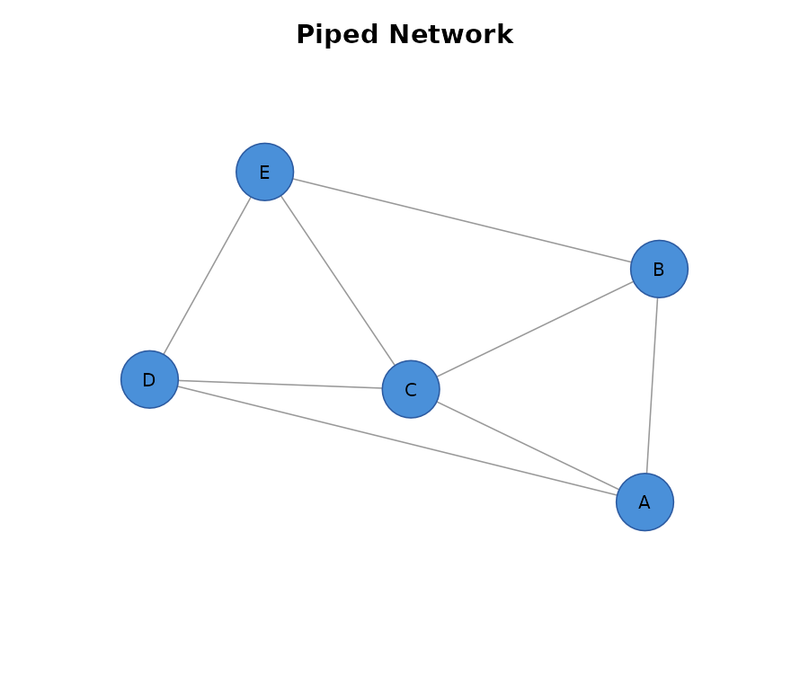
TNA Integration
Functions for working with Transition Network Analysis models from
the tna package.
| Function | Description |
|---|---|
as_cograph() |
Convert TNA model to cograph (use with tna/group_tna) |
is_tna_network() |
Check if network is from TNA |
get_tna_model() |
Retrieve original TNA model |
plot_tna() |
Plot TNA model directly |
# TNA integration requires the tna package
library(tna)
# Create a TNA model from sequence data
# Example: Student learning state transitions
sequences <- data.frame(
id = rep(1:10, each = 20),
time = rep(1:20, 10),
state = sample(c("Explore", "Engage", "Reflect", "Apply"), 200, replace = TRUE)
)
model <- tna(sequences, id_var = "id", time_var = "time", state_var = "state")
# Convert TNA model to cograph
net <- as_cograph(model)
# Check if it's a TNA network
is_tna_network(net)
#> [1] TRUE
# Retrieve original model
original <- get_tna_model(net)
original$weights
original$inits
# Plot TNA model directly
plot_tna(model)
# Or plot the converted network
splot(net, title = "Learning State Transitions")TNA with Group Comparisons
# Group TNA for comparing different populations
group_model <- group_tna(
sequences,
id_var = "id",
time_var = "time",
state_var = "state",
group_var = "condition"
)
# Convert group TNA
net_group <- as_cograph(group_model)
# Plot comparison
plot_compare(
group_model$groups$Control,
group_model$groups$Treatment,
title = "Control vs Treatment Transitions"
)Multilayer Networks
Supra-Adjacency
| Function | Description |
|---|---|
supra_adjacency() / supra()
|
Build supra-adjacency matrix |
supra_layer() |
Extract single layer |
# Create two layers
layer1 <- matrix(c(0, 1, 1, 1, 0, 0, 1, 0, 0), 3, 3,
dimnames = list(c("A", "B", "C"), c("A", "B", "C")))
layer2 <- matrix(c(0, 0, 1, 0, 0, 1, 1, 1, 0), 3, 3,
dimnames = list(c("A", "B", "C"), c("A", "B", "C")))
layers <- list(Social = layer1, Work = layer2)
# Build supra-adjacency matrix
supra <- supra_adjacency(layers, interlayer = 0.3)
cat("Supra-adjacency dimensions:", dim(supra), "\n")
#> Supra-adjacency dimensions: 6 6
# Extract layer 1 (Social)
social_layer <- supra_layer(supra, 1)
print(social_layer)
#> A B C
#> A 0 1 1
#> B 1 0 0
#> C 1 0 0Aggregation & Comparison
| Function | Description |
|---|---|
aggregate_layers() / lagg()
|
Aggregate across layers |
layer_similarity() / lsim()
|
Similarity between two layers |
# Aggregate layers
agg_mean <- aggregate_layers(layers, method = "mean")
agg_sum <- aggregate_layers(layers, method = "sum")
cat("Mean aggregation:\n")
#> Mean aggregation:
print(agg_mean)
#> A B C
#> A 0.0 0.5 1.0
#> B 0.5 0.0 0.5
#> C 1.0 0.5 0.0
# Layer similarity
sim <- layer_similarity(layer1, layer2, method = "cosine")
cat("\nCosine similarity between layers:", round(sim, 3), "\n")
#>
#> Cosine similarity between layers: 0.5Customization Reference
Themes
Use themes with splot(net, theme = "dark") or via piping
with sn_theme().
| Theme | Description |
|---|---|
classic |
White background, blue nodes (default) |
dark |
Dark background, light elements |
minimal |
Subtle, minimal styling |
# Compare themes
par(mfrow = c(1, 3))
splot(adj_matrix, theme = "classic", title = "Classic")
splot(adj_matrix, theme = "dark", title = "Dark")
splot(adj_matrix, theme = "minimal", title = "Minimal")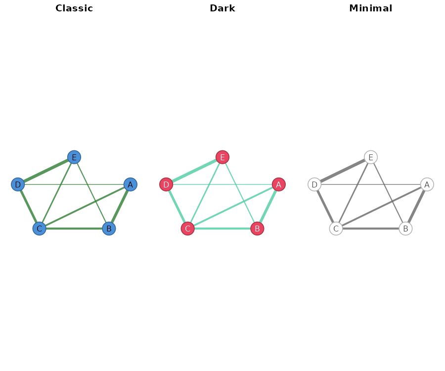
Shapes
Built-in shapes: circle, square,
triangle, diamond, pentagon,
hexagon, star
# Different node shapes
par(mfrow = c(1, 3))
splot(adj_matrix, node_shape = "circle", title = "Circle")
splot(adj_matrix, node_shape = "square", title = "Square")
splot(adj_matrix, node_shape = "diamond", title = "Diamond")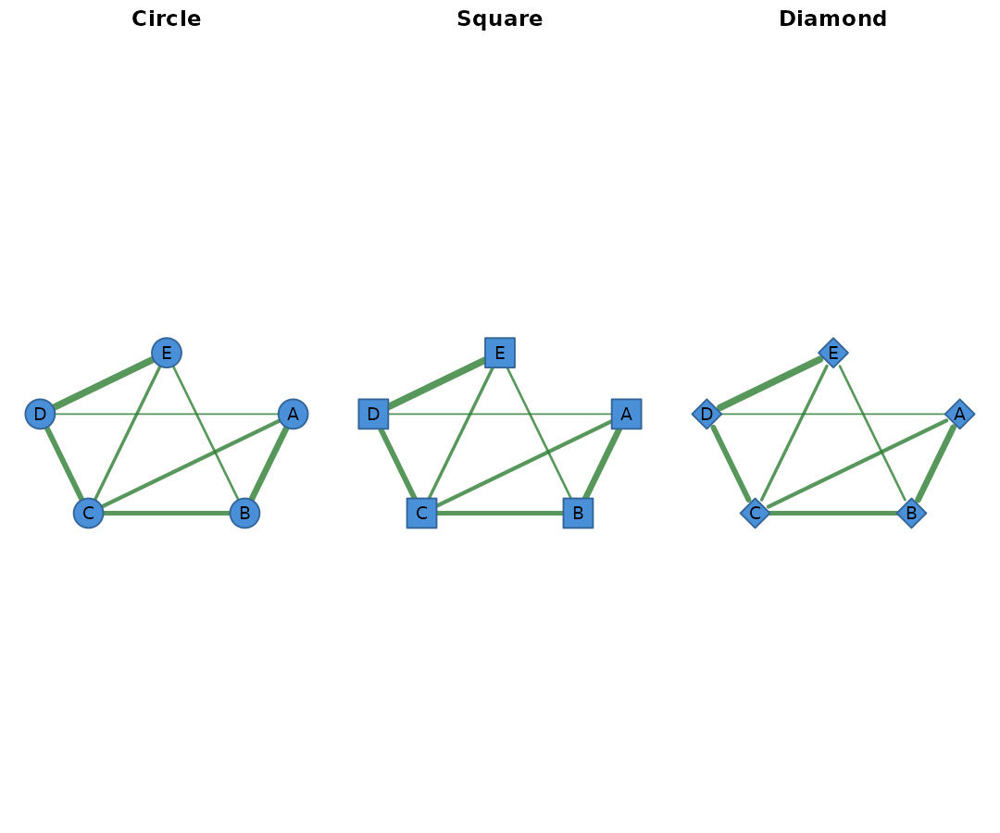
Quick Reference
| Category | Key Functions |
|---|---|
| Plotting |
splot(), soplot(),
plot_tna()
|
| Specialized Plots |
plot_htna(), plot_mtna(),
plot_mlna(), plot_mcml()
|
| Comparison |
plot_compare(), plot_heatmap()
|
| Import |
as_cograph(), to_cograph(),
cograph()
|
| Export |
to_igraph(), to_df(),
to_matrix()
|
| Communities |
communities(), community_louvain(),
compare_communities()
|
| Utilities |
filter_edges(), n_nodes(),
n_edges()
|
| Piping |
sn_layout(), sn_theme(),
sn_nodes(), sn_edges(),
sn_render()
|
| TNA |
plot_tna(), is_tna_network(),
get_tna_model()
|
| Multilayer |
supra_adjacency(), aggregate_layers(),
layer_similarity()
|